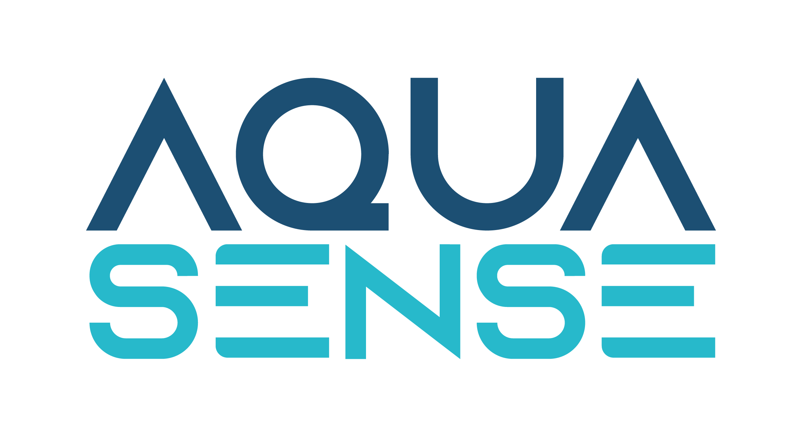
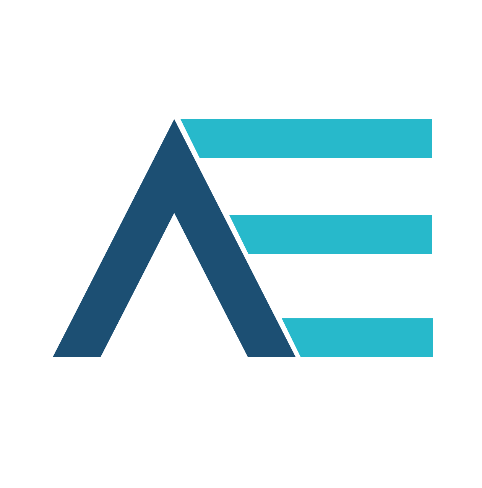

Gestão inteligente da água · IoT residencial
AQUASENSE Design System
A base visual do app. Uma regra governa tudo: cor é reservada para status. Se algo está colorido fora da paleta de marca, é porque significa alguma coisa. Isso é o que permite o cidadão responder “está tudo bem?” em dois segundos.
01
Marca
O logotipo já define a bipolaridade cromática do produto: um azul profundo que ancora e um ciano que sinaliza. O app inteiro sai daí.



Uso sobre fundo escuro
Regras
02
Cor
Marca amostrada dos arquivos de logo. O azul-céu de interação vem da referência 1 — é ele que faz a ponte entre o profundo institucional e o ciano do sensor.
Marca
Neutros
03
Severidade e estado de sensor
Cada faixa de fluxo tem três valores: a cor de sinal (preenchimentos, pontos, bordas), a cor de texto escurecida (contraste AA sobre branco) e o tint de fundo. Nunca use a cor de sinal como cor de texto.
| Nível | Faixa | Sinal | Texto | Fundo | Rótulo no app |
|---|---|---|---|---|---|
| Normal | até 2 L | #17A34A | #0F7A37 | #E8F6ED | Fluxo normal |
| Leve | 2 – 5 L | #E0A413 | #8A6209 | #FCF3DF | Possível vazamento leve |
| Moderado | 5 – 10 L | #ED7014 | #9A4708 | #FDEEE1 | Possível vazamento moderado |
| Crítico | acima de 10 L | #D93B30 | #9E2A22 | #FBE9E7 | Possível vazamento crítico |
| Indisponível | sem dados | #7C8DA0 | #4C5C6B | #EDF1F5 | Sensor indisponível |
Por que “indisponível” é cinza
Sensor sem dados usa cinza neutro, a última leitura conhecida riscada e o carimbo de horário: “Sem dados desde 11:40”.
Riscar um travessão não comunica nada e ainda vira um glifo ilegível. Riscar o último valor real diz duas coisas: o que se sabia e que aquilo já venceu.
Verde: o usuário lê “tudo certo” onde o sistema não sabe de nada.
Vermelho: o usuário corre atrás de um vazamento que não existe e perde a confiança no app.
Badges
04
Tipografia
Space Grotesk nos papéis de display — as formas geométricas de largura constante ecoam as letras do logotipo. Inter em corpo e interface, JetBrains Mono em rótulos e carimbos de horário. Numeral tabular é obrigatório em todo valor de litragem: sem isso, uma lista de sensores “dança” a cada atualização.
Padrão de valor
Número em display, unidade em 18px/600 --muted. Vírgula decimal, ponto de milhar.
05
Forma e espaço
Grade de 8px, margem lateral de 20px, uma única sombra em todo o produto. A referência 2 usa cantos contidos — mantemos isso e reservamos o formato pílula só para controles de filtro e badges.
Raio
Espaço
Elevação e alvo de toque
06
Componentes
Estrutura herdada do kit da referência 2 — botão sólido de largura total, campo alto de 52px, linha de lista com ícone circular à esquerda e valor à direita, verificação por OTP. Recolorido para AQUASENSE.
Botões
Em qualquer par de ações, a secundária vem antes da primária. Cancelar à esquerda, Salvar à direita — inclusive em confirmações destrutivas.
Campos e verificação
Mínimo de 8 caracteres.
Informe um telefone com 11 dígitos.
Enviamos um código de 4 dígitos para (11) 9****-1234.
Reenviar em 00:42
Hero de status — o componente central do app
É a primeira coisa da tela Início. Responde “está tudo bem?” antes de qualquer rolagem. Muda de cor por severidade; a onda é a assinatura visual da marca.
Tudo certo por aqui
Nenhuma anormalidade identificada na sua residência.
Estado normal
Fluxo fora do padrão
Identificamos fluxo acima do padrão no banheiro.
Severidade moderada
Verifique sua residência
Fluxo muito acima do padrão na área externa.
Severidade crítica
Indicadores rápidos e fluxo da casa
O trecho com anormalidade acende na cor da severidade. Explica de onde a água vem e para onde vai sem exigir planta baixa.
Linhas de lista
Avisos e orientação
Foi identificado fluxo acima do padrão no banheiro. Verifique torneiras, chuveiro e descarga. Se todos estiverem fechados, feche o registro do banheiro e acompanhe se o fluxo cai.
Toda tela de severidade acima de “normal” obriga um card de orientação. Uma ocorrência sem instrução de ação deixa o cidadão travado — é o requisito US11.
Gráfico
Uma série só, sempre --sky, sem legenda. Dias com ocorrência ganham um ponto na cor da severidade — nunca uma segunda linha.
08
Estados obrigatórios
Nenhuma tela é entregue só no estado ideal. Toda lista e todo gráfico precisam dos quatro: carregando, vazio, erro e sem conexão.
Não existem anormalidades registradas na sua residência.
Comece a utilizar o sistema para visualizar seu histórico.
Não conseguimos atualizar os dados agora.
09
Linguagem
O sistema detecta padrões de fluxo, não confirma vazamentos. A interface nunca pode prometer uma precisão que o hardware não entrega. Estas strings são fixas no design system — componentes de severidade não aceitam texto livre.
“Possível vazamento moderado”
“Foi identificado fluxo fora do padrão no chuveiro.”
“Anormalidade identificada na área externa.”
“Verifique torneiras, chuveiro e descarga do banheiro.”
“Sem dados desde 11:40.”
“Vazamento confirmado”
“O chuveiro está vazando.”
“Detectamos um vazamento de 7,4 L.”
“Anomalia de vazão no ramal secundário.”
“Sensor 03 · payload timeout”
Hierarquia de leitura de toda tela crítica
da residência
problema
Esta ordem é inegociável. O histórico nunca aparece acima da orientação.